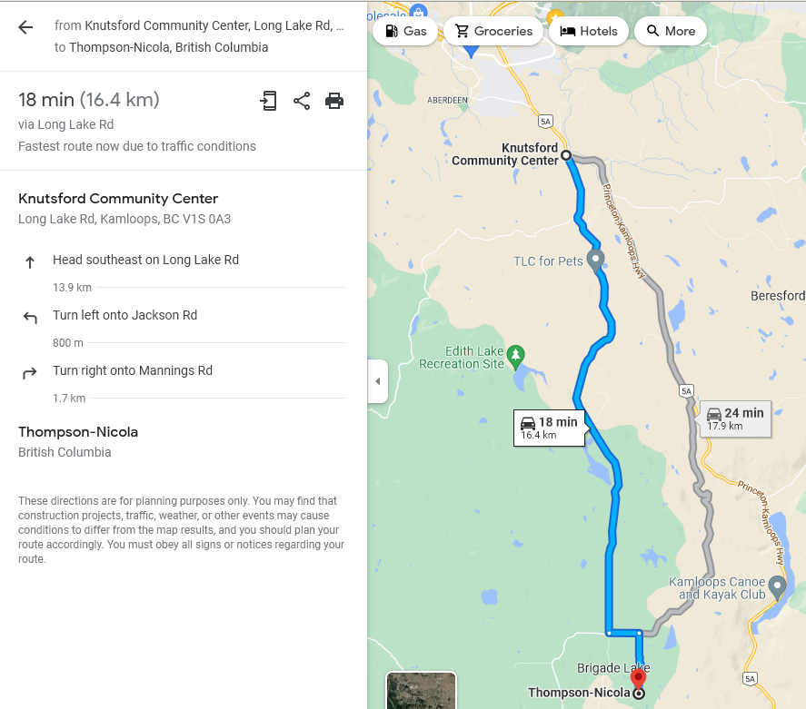

Field Day 2023 - June 24-25
Back to StoriesStory 741
Sun, 2023-06-11 19:23 — VE7FSR
2023 ARRL Field Day Logo DO NOT EDIT OR MODIFY.jpg The KARC Field Day will be held on June 24-25 at Peter (VE7DNZ) Philip's farm in Knutsford.
A map and Google Earth KMZ file are attached, as well as Google Maps directions from the link below. https://goo.gl/maps/XB6LNnw4JAH5wz6H7

Field Day 2023.jpg We will be setting up the VE7UT station on Friday from noon onward, and on Saturday morning.
Please bring your own chair, food and beverages, and be prepared for "rustic" and historic conditions (this is part of a ranch that has been in operation for over a hundred years).
There is an old ranchers cabin and an outhouse, and lots of room to camp if you are so inclined.
The views are spectacular, so please remember to bring your camera.
We will be operating two HF stations (SSB, CW, and RTTY) using the club HF yagi and 80M Carolina Windom antennas, and will be using solar and generator power We will also be beaconing on APRS, and will also be listening on 146.520 for simplex VHF contacts.
We will also have a GOTA (Get On The Air) station for those new to HF who want to give it a try.
Field Day 2 2023.jpg To get there start from the Knutsford Community Hall south of Aberdeen, and follow the Long Lake Road south until you come to the junction and turn left onto Jackson Road .
Head east and then turn right onto Mannings Road and follow it south until you come to the sign that says " End of Public Road ".
Look to your left and you will see a sign for the KARC Field Day and a gate leading into a field.
Please close the gate after you come through, and follow the two-track dirt road and the flagging ribbons until you come to the old rancher's cabin.
Please stay on the two-track (unless you need to bypass a mud puddle) and please avoid driving in the field.
We will be monitoring 147.320 VE7RLO if you need help finding the place or just want to say "Hello!" Please keep in mind you are driving through open range and there may be cattle on the roads so please drive carefully, especially after dark.
Attachment Size Google Earth KMZ location of Field Day site 785 bytes ARRL Field Day Packet 691.44 KB 2023 Field Day Rules 91.52 KB 2023 Field Day W1AW Sked 15.36 KB 2023 Field Day FAQ 38.12 KB What is Field Day Flier 168.56 KB